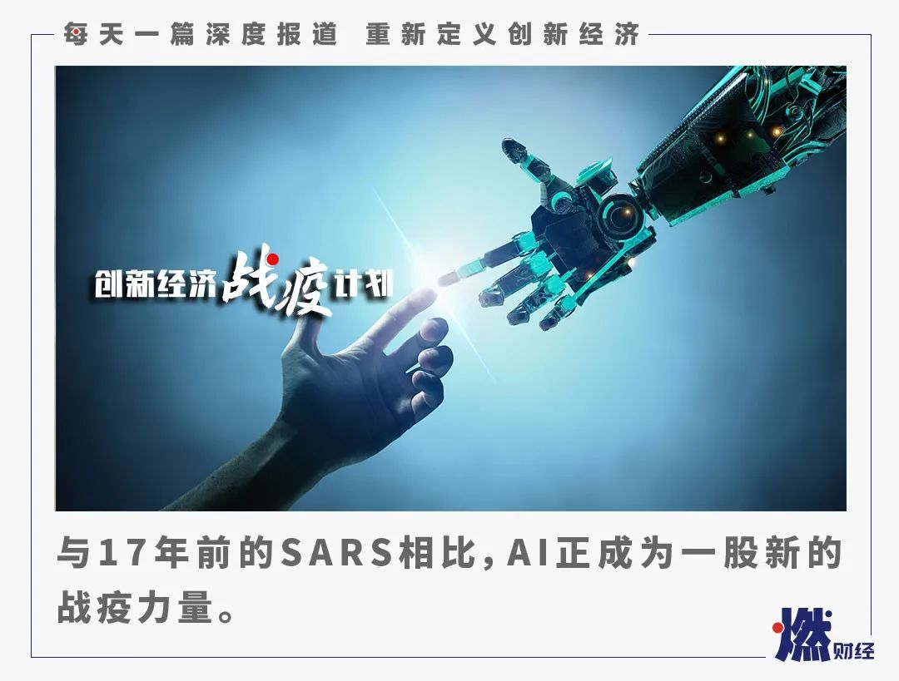
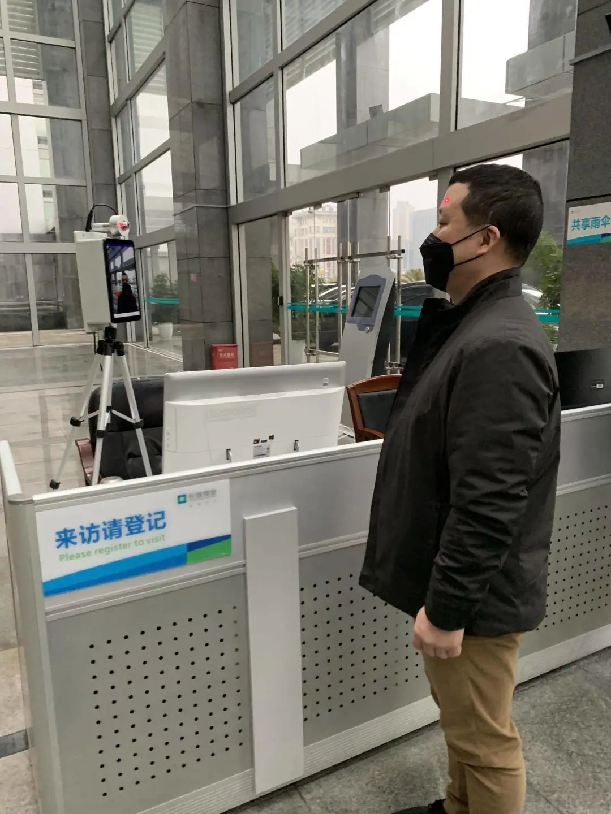
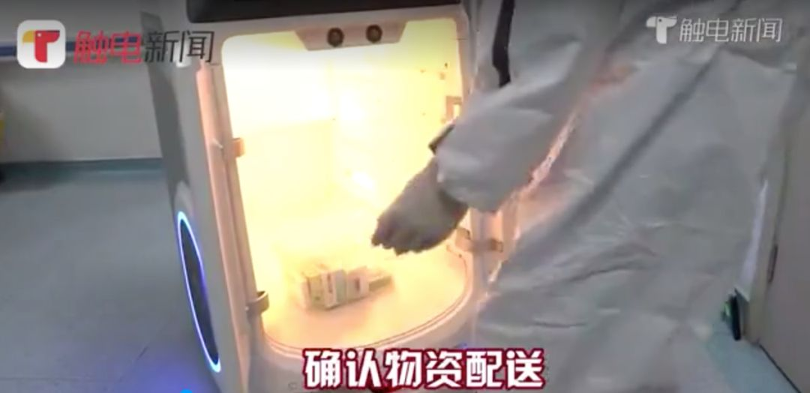

无人配送，噱头还是风口？
原文链接 备份链接 燃财经（ID:rancaijing）原创 作者 | 孔明明 编辑 | 周昶帆 疫情之下，病毒肆虐，如何更安全地实现隔离，成了人们关注的重点。除了口罩、消毒液、护目镜等被抢断、线上电商订单激增之外，无人配送也在这非常时期 …

《创新经济战疫计划》，是燃财经在新型肺炎疫情期间推出的特别栏目，关注创新经济企业遇到的新难题、商讨应该采取的新对策，希望能够帮助中小企业一起战胜挑战、把握机会。
作者 | 苏琦
编辑 | 魏佳
2020年的这场疫情，时常被人拿来和2003年的SARS相比较。与17年前相比，在这场艰难的疫情攻坚战中，除了日夜奋战的医护人员外，日益成熟的AI技术已经成为一股“战疫”力量，发挥出重要作用。
平常提到AI，总是和“亏损”、“不落地”、“泡沫”这样的关键词联系在一起，但在疫情之下，AI变得与我们的生活息息相关。
在机场、地铁站，你接受过红外热成像系统的测温；从外地返回住所时，你可能接到过智能机器人打来的信息填报电话；进入写字楼时，AI能识别你戴没戴口罩；医院里，医生凭借着AI辅助诊断系统快速判断出患者是否可能患上新冠肺炎，机器人穿梭在隔离病房，为病人配送餐食药品……
疫情加速了AI和城市生活的融合，一方面，AI能够提高效率，另一方面，AI在某些场景下替代人工，能够降低感染风险。那么，哪些场景下的应用正在迎来新机会？疫情终将过去，AI在各个领域的需求还会继续吗？
***AI辅助诊断，2-3秒找出病灶***
场景：医院
这次疫情，最紧张的地方要属各地医院，尤其是武汉地区的医院。
李文亮医生此前工作的武汉市中心医院，与华南海鲜市场仅一站之隔，位于疫情最核心区域。在该医院被确定为发热患者定点收治医院后，高峰时段，医院每天的CT检查量平均超过1000例，一线的放射科医生只能通宵读片。一个胸部CT有300多张横截面的片子，仅靠医生肉眼一张一张读片，工作量相当大。
2018年时，武汉市中心医院就开始使用数坤科技的CT人工智能辅助诊断产品，主要用于冠心病领域。因此在疫情爆发之后，数坤科技立即组织研发人员，在春节期间开发了新冠肺炎AI辅助诊断产品，并于2月初在武汉市中心医院上线使用。
这个产品能在2-3秒内从300多层的CT影像中挑出病灶影像，并生成3D肺叶模型，标出病灶所在区域，随后引导医生对病人进行合理分诊，提高新冠肺炎的检测效率。
如果患者再次做CT，该产品还能自动对比病人前后的病灶变化，便于医生判断病情。武汉市中心医院影像科王翔主任曾公开表示，这套AI系统可为医生提升50%的效率。

武汉市中心医院医生使用数坤新冠肺炎AI产品
效率提高了，准确率怎样保证？数坤科技相关负责人告诉燃财经，既不能错判，还要抑制假阳，即由于环境、操作、实验方法或者患者自身等因素，把不具备阳性症状的人检测出阳性的结果，这两个维度是现有产品的难点。
“要控制好这两个维度，需要凭借多年的医学临床经验和病例判断能力，对AI系统的算法进行不断调参。”该负责人称，医生的经验和数据的积累，才是很多AI辅助诊断系统走得更远的关键。也是得益于数坤科技在冠心病领域辅助诊断的数据积累，这次才能够快速迭代出新冠肺炎相关的辅助诊断产品。
据介绍，该AI系统已在武汉大学人民医院、武汉大学中南医院，武汉市中医院等全国几十家医院落地使用，并捐赠给雷神山医院。

北京友谊医院影像科使用数坤新冠肺炎AI产品
在疫情中，依图科技、商汤科技也基于已有的智慧诊疗平台，针对新冠肺炎进行了升级。
“这次疫情给我最大的感触是，对于普通老百姓来说，好的医疗资源真的十分有限。疫情加速验证了AI助医的效果，接下来可能会有更多的基层医疗机构选择AI产品，让具备大医院诊断能力的AI产品可以快速复制到基层。”该负责人告诉燃财经。
他认为，AI辅助诊断系统对于此次肺炎来说，除了诊断还有科研意义。在接下来的阶段，应该针对疾病在临床做一些科研，构建更好的防控体系。未来，AI技术在辅助诊断领域的应用将成为一种趋势。
***非接触测体温，不摘口罩也能测***
场景：车站、楼宇
返工潮期间，车站、机场、写字楼等公共场所人流聚集，该如何监控异常体温，成为一大难题。
通常大家进出小区，都会有门卫挨个用额温枪进行测量，但在人多的地方，这样的做法不现实，所以AI企业开始各显神通，用红外测温仪替代。
红外测温仪通过红外热成像相机，对大于3米的范围内的人群进行非接触远距离测温，可以同时测100人。人群中如果有人超过37.3℃，测温仪能够迅速识别，并提示工作人员进行二次测量复核。

旷视“明骥”测温解决方案系统
怎样才能把被测温群体中的每个人的温度标注出来？
旷视副总裁谢忆楠告诉燃财经，旷视在AI识别方面一直做的是人体检测，这次他们将普通光学摄像机和红外温感摄像机结合成一体，改造后的硬件能够解决这个问题。
另外，冬天大家暴露在外面的皮肤非常少且佩戴口罩，如何找到有效测量体温的部位是另一个挑战。旷视采用的办法是先把口罩扫描出来，再快速通过口罩去定位额头的位置。
“现在大家都在抢着推出红外测温，市场需求量很大，响应速度就成了一个问题。另外，测温的精准度会受到很多因素的影响，尤其在车站这种人流量比较大、室内外温差大、环境比较复杂的地方，难免会有温度的浮动。”西安柚个群信息科技有限公司总经理王亚恒称。
红外测温为了保证测量温度的精准性，很关键的一个硬件叫黑体，目前供应不足。“以前这个产品一般都是小规模生产，市场需求量没那么大。疫情的突然爆发，对造黑体厂家的反应速度来说提出了极高的要求。AI公司面对这条陌生的供应链，如何快速实现规模化量产，也成了当务之急。”王亚恒称。
对此，旷视推出了新算法，即便无黑体也能保证人体测温的误差在±0.3℃，为行业提供了新的可能性。
还有一种特殊情况是，疫情当前大家都佩戴口罩和帽子，对于复工的职员来说，戴着口罩也能轻松实现刷脸打卡和测温，成了新刚需。
商汤科技针对办公场所的门禁这一场景，研发出了SenseThunder-E火神测温热像仪+SensePass Pro无感通行测温方案，对体温异常和未戴口罩者进行自动拦截。
一些创业公司也看准了机会进场，柚个群信息科技疫情防控体温预测系统就针对江西上饶市政府相关部门，生产了“人脸识别+体温监测+云端分析”集成系统。

柚个群信息科技疫情防控体温预测系统
“现在各行各业都有增加防疫功能的需求，比如学校会增加含有测温板块的闸机，并且要在开学前改造到位。”王亚恒告诉燃财经，疫情期间，一些有产品制造能力、生产能力、销售渠道的公司，开始主动找AI企业合作，增加例如测温等新的功能点，这对于行业来说是好事。
新的需求意味着新的机会。“这次疫情告诉AI行业，需要静下心来练习内功，比如你的AI算法能不能和目前现在成熟的物联网设备，比如摄像头、开关感应器、门禁、闸机等，进行连接或者其他形态上的改变。产品第一，我认为这是AI企业在这次疫情期间要首先要学习的。”谢忆楠称。
*****AI追踪，还原确诊病人活动轨迹*****
场景：社区
“您好，这里是xx社区街道办事处，请问您是xxx居民吗？请问您或您的家人是否有咳嗽、胸闷等不适症状？请问您或您的家人目前体温是否正常？”
最近你或许已接到不少此类AI问询/排查电话，同样的，你在进出小区、办公楼时，每天都要在系统上填报个人信息，这背后也离不开AI的智能服务。
据了解，百度、科大讯飞、阿里云等科技企业的“智能外呼平台”，京东数科的智能外呼机器人都已经在这次抗疫过程中得到应用。
此外，京东数科还上线了疫情问询机器人，能对疑似病患进行提问，分析对方是否需要进行隔离治疗。用户扫码登录后，还能查询到发热门诊机构和定点医院的信息，能在“在线药房”选购药品。

“不过，经历了这次疫情，我也发现团队能力还有需要提升的部分。比如第一版问询疫情机器人的开发只用了三天时间，每天会有大量的用户来咨询问题，有些问题会超越原有的数据库，这也激发我们持续迭代产品，完善知识库。”京东数科首席科学家薄列峰称。
他补充道，“另外，当我们在配置外呼机器人的过程中，实际上还是需要社区工作人员的人工参与，团队还需建立一套更加完整的、可以持续自我迭代的知识库，来提升自动化的程度。”
好在疫情过去之后，外呼机器人在各种人员比较密集的场景中，还能发挥比较大的作用，比如当物流配送人员送到之后，可以用外呼机器人确认物品已经送达。
在疫情中，怎样快速还原确诊病人的活动轨迹是一个紧迫的问题。
京东数科提供了疫情高危人群势态分析和预警系统，帮助政府分析居民的行动路线，对高危人群做出预警，进行排查。该系统能对确诊病患的行为轨迹进行分析，帮助潜在的密切接触者做隔离。
“全国各地政府都想知道从疫区回来的人分布在哪里，如何高效排查，靠人力一个一个排查几乎不可能，时空数据总是动态变化，里面关系到电信运营商的数据、政府数据和企业数据的打通问题。我们给18个省市提供了这套系统，北京找到500位密切接触者。”京东集团副总裁、京东数字科技首席数据科学家、京东城市总裁郑宇称，确诊病患的轨迹是最紧急也是最棘手的需求，系统经常一天要算两遍。
普通市民则可以通过社区疫情智能管控平台提报自己的健康状况以及出行记录，并且凭借生成的二维码出入小区。
“对于社区的管控平台，我们在榆林、亦庄都有落地，亦庄现在有四万多户居民每天都在使用，背后节省的是四万多张纸和四万分钟的填表格时间。”郑宇称。

***无人机和AGV将被应用到更多领域***
场景：农田、仓库
疫情发生以来，“无人+”成了高频关键词。
春节期间，一则村干部喊话的视频在朋友圈广泛流传，但很多人不知道的是，喊话器其实还有无人机版。
大疆方面称，大疆“御”MAVIC2行业双光版机型，可以选择搭配喊话器、热成像器等功能，集喊话、热成像测温、高空作业喷洒消毒水等功能于一身。
2月4日，大疆农业发起“疆军战疫”并设立1000万战疫基金，支持各地疫情消杀。截至目前，大疆农业植保无人机已在全国千座村落累计消杀超4亿平方米。不过需要提醒的是，这类产品需要专业人员进行操控。
大疆方面称，除了喷洒消杀防疫工作，大疆还在巡逻疏导、防疫宣传、物资投递等场景提供了无人机解决方案。
配置了热成像传感器的“御”Mavic 2 行业双光版
除了无人机外，医药物资的出入库及配送，防护用品生产企业的物料拣选及产线搬运，还用到了无人车。
“我们有个客户就在武汉当地，负责湖北的医药配送。疫情期间，我们专门为他提供技术支持，防止订单量暴增而导致系统不稳定。”快仓智能联合创始人孙宇告诉燃财经。
快仓智能机器人在仓库工作
但孙宇称，仓库内效果不错，开放环境的最后一公里确实比较困难，无人车常态化运作还有不少挑战，主要在于环境和天气的复杂性、法律风险不确定性等因素。在运输环节，他比较看好无人集卡（无人驾驶集装箱卡车）这种产品形态，尤其是干线物流的无人集卡。

“平平”和“安安”在医院配送物资
此次疫情，让“自动引导车（AGV）+”复合型产品得到更广泛的应用。
广东省人民医院就引进了双胞胎机器人“平平”和“安安”，在隔离病房和感染科配送餐食药品，回收被服和医疗垃圾。后来出现了各类消毒机器人、巡视机器人、测温机器人等，都是在AGV的基础上进行创新，从而满足各种场景的应用。
*****AI算法缩短分析时间，助力研发新药、疫苗*****
场景：实验室
新冠肺炎疫情期间，百度、阿里巴巴、商汤等企业采取开放核心算法和计算能力的方式，与医学研究机构共同抗击疫情，主要用于病毒基因测序、新冠肺炎新药与疫苗研发、蛋白筛选等工作。
这些都是在实验室通过计算机的对比推算来实现的，利用人工智能算法，可将原来数小时的疑似病例基因分析缩短至半小时，并能精准检测出病毒的变异情况，争取宝贵时间。
在华创资本合伙人熊伟铭看来，通常一个药的研发大概需要10亿美元、10年时间，在AI的帮助下，或许能将这个时间大大缩短。但从另一方面来看，AI制药并不是一个比较火的市场，在这个领域创业需要熬时间。
他介绍，在国外，像薛定谔这样的已经创业30年的公司，2018年全公司的收入也才达到6000万美金，相比之下，黑钻成立不到六年的时间就上市了，但目前为止也只做出了两个临床前的药物。所以AI技术到底能不能达到大家期望的结果，整个行业目前还在观望中。

图 / 视觉中国
用人工智能帮助新药研发早已不是新话题了。早在1981年10月，Fortune财富杂志的封面就已经报道过默克在用计算机帮助提升新药研发的效率。但尽管如此，目前还没有任何一款由AI成功研发的药物上市。
“药物研发是一个特别漫长的过程，花费也是巨大的。在这个过程中，目前AI能起到的作用是加速化合物的筛选，但到了临床之后，作用其实比较有限。”中科院资本执行董事李明称。
对于制药公司来说，公司最终的价值取决于新药的流水线，临床前的条件和靶点的选择等条件。因此，从创业的角度，熊伟铭认为应从制药领域上下游和周边切入，会比较有优势。如果创业公司既有AI能力，同时又理解制药行业，将会有很大的机会。

*结语*
疫情过后一些场景将沉淀
但并不能决定AI企业的未来
疫情终将过去，AI在各个领域的需求会逐渐消退吗？
“AI的渗透是分阶段的，目前大部分创业公司都集中在图像和语音语义上面，这两领域的客户集中在安防、金融领域，需求刚性，买单能力也比较强。现在AI也开始逐渐渗透到工业领域，但下一步AI企业该往哪里走，行业也在观望当中。”中科院资本执行董事李明称。
李明认为，整体来看，疫情之下，各家AI企业的反应速度都很快，但是现在上游供应链有很多产品有价无市，再加上复工压力，AI企业将背负很大的压力。
疫情过去以后，一些场景终究会沉淀下来。比如，首都机场的测温仪是SARS时开始使用的，北京地铁的安检是奥运会时开始使用的，此次疫情也同样会积累一些场景的使用习惯。
“但回过头来说，这些场景下新增的功能和产品并不是决定AI企业发展最关键的东西。疫情对所有产业都会是一次大洗牌，模式落后、产品单一、财务状况不过关的企业都会被淘汰。这次疫情是一个催化剂，但企业光有催化剂是发展不起来的。大浪淘沙，考验的反而是中小AI企业。”李明称。
*题图来源于视觉中国。“创新经济战疫计划”相关的深度报道和沙龙实录可点击公众号菜单“战疫计划”阅读。


你身边有哪些有意思的AI应用？
欢迎在评论区留下你的评论。我们会在点赞前三（超过20个，统计周期为7天）的评论里挑选一位网友，送出爱奇艺季卡一张。原创文章转载请点击公众号菜单“转载合作”。
一手资讯/硬核报告/每日红包/线下活动！就差你了！快加微信rancaijing01回复“读者”一键上车！


燃财经工作室
点个在看吧😘
长按二维码向我转账
点个在看吧😘
受苹果公司新规定影响，微信 iOS 版的赞赏功能被关闭，可通过二维码转账支持公众号。
原文链接 备份链接 燃财经（ID:rancaijing）原创 作者 | 孔明明 编辑 | 周昶帆 疫情之下，病毒肆虐，如何更安全地实现隔离，成了人们关注的重点。除了口罩、消毒液、护目镜等被抢断、线上电商订单激增之外，无人配送也在这非常时期 …
原文链接 备份链接 燃财经（ID:rancaijing）原创 作者 | 金玙璠 编辑 | 魏佳 疫情突袭，让AI企业忙碌了起来，既要紧急研发抗“疫”产品，又要高效复工复产，还要权衡疫情给企业和行业带来的影响。 旷视是其中更加特别的一员，一 …
原文链接 备份链接 根据丁香医生实时数据，截至 3 月 3 日 21:32 时，全国现存确诊病例 29930 例，累计确诊病例 80303 例，现存疑似病例 587 例。其中，重症病例 6806 例，死亡病例 2948 例， …
原文链接 备份链接 CDC表示一天能做的测试只有100个，有些力不从心。 文、图 | 李 莹 今天（3月2日）是我滞留在美第38天#详见《口述实录 | 我大年夜出发去美国自助游，直到现在还被困在旧金山》#，美国已有100例新冠病毒感染肺炎 …
原文链接 备份链接 这种形式主义罔顾科学的粗暴做法，不仅可能伤害学生身体健康，也会给疫情防控添乱。 文 | 沈 林 在国家卫健委发布的系列新冠肺炎治疗方案中，一直强调中西医结合。临床证明，中医经验方在减轻发热咳嗽症状、控制病情进展，提升 …